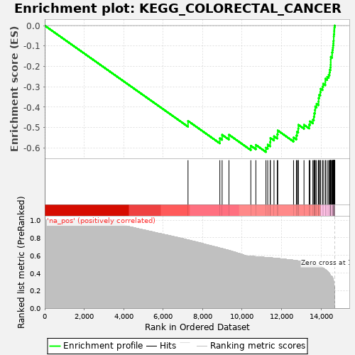
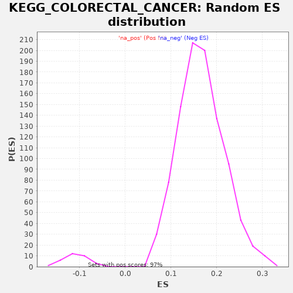

| | | Dataset | drug_embeddings_gsea |
| Phenotype | NoPhenotypeAvailable |
| Upregulated in class | na_neg |
| GeneSet | KEGG_COLORECTAL_CANCER |
| Enrichment Score (ES) | -0.6201073 |
| Normalized Enrichment Score (NES) | -5.7428994 |
| Nominal p-value | 0.0 |
| FDR q-value | 0.0 |
| FWER p-Value | 0.0 |
Table: GSEA Results Summary

Fig 1: Enrichment plot: KEGG_COLORECTAL_CANCER
Profile of the Running ES Score & Positions of GeneSet Members on the Rank Ordered List
| PROBE | GENE SYMBOL | GENE_TITLE | RANK IN GENE LIST | RANK METRIC SCORE | RUNNING ES | CORE ENRICHMENT | | 1 | PIK3R5 | | | 7260 | 0.776 | -0.4676 | No |
| 2 | RAC3 | | | 8873 | 0.683 | -0.5527 | No |
| 3 | APC2 | | | 8988 | 0.678 | -0.5357 | No |
| 4 | RAC2 | | | 9334 | 0.656 | -0.5352 | No |
| 5 | DCC | | | 10442 | 0.589 | -0.5893 | No |
| 6 | TCF7L1 | | | 10697 | 0.585 | -0.5852 | No |
| 7 | AKT3 | | | 11209 | 0.576 | -0.5990 | Yes |
| 8 | PIK3CD | | | 11299 | 0.574 | -0.5840 | Yes |
| 9 | APPL1 | | | 11421 | 0.572 | -0.5714 | Yes |
| 10 | AXIN2 | | | 11434 | 0.572 | -0.5512 | Yes |
| 11 | PIK3CG | | | 11617 | 0.568 | -0.5429 | Yes |
| 12 | TCF7 | | | 11781 | 0.565 | -0.5333 | Yes |
| 13 | PIK3CB | | | 11808 | 0.564 | -0.5144 | Yes |
| 14 | RALGDS | | | 12607 | 0.545 | -0.5490 | Yes |
| 15 | TGFB3 | | | 12751 | 0.540 | -0.5390 | Yes |
| 16 | TGFB2 | | | 12780 | 0.539 | -0.5212 | Yes |
| 17 | AXIN1 | | | 12843 | 0.537 | -0.5058 | Yes |
| 18 | APC | | | 12853 | 0.537 | -0.4867 | Yes |
| 19 | ARAF | | | 13137 | 0.525 | -0.4868 | Yes |
| 20 | RHOA | | | 13398 | 0.513 | -0.4858 | Yes |
| 21 | MAPK10 | | | 13440 | 0.511 | -0.4699 | Yes |
| 22 | MSH3 | | | 13586 | 0.501 | -0.4615 | Yes |
| 23 | PIK3CA | | | 13636 | 0.498 | -0.4466 | Yes |
| 24 | RAC1 | | | 13657 | 0.496 | -0.4298 | Yes |
| 25 | LEF1 | | | 13693 | 0.494 | -0.4141 | Yes |
| 26 | TCF7L2 | | | 13706 | 0.493 | -0.3968 | Yes |
| 27 | TGFBR1 | | | 13774 | 0.488 | -0.3835 | Yes |
| 28 | AKT2 | | | 13873 | 0.480 | -0.3727 | Yes |
| 29 | TGFB1 | | | 13878 | 0.480 | -0.3554 | Yes |
| 30 | TGFBR2 | | | 13905 | 0.477 | -0.3397 | Yes |
| 31 | PIK3R3 | | | 13963 | 0.471 | -0.3263 | Yes |
| 32 | PIK3R2 | | | 13979 | 0.469 | -0.3102 | Yes |
| 33 | BRAF | | | 14075 | 0.460 | -0.2998 | Yes |
| 34 | CYCS | | | 14106 | 0.455 | -0.2852 | Yes |
| 35 | CCND1 | | | 14216 | 0.438 | -0.2766 | Yes |
| 36 | BAD | | | 14218 | 0.438 | -0.2607 | Yes |
| 37 | BIRC5 | | | 14311 | 0.421 | -0.2515 | Yes |
| 38 | MAPK9 | | | 14388 | 0.405 | -0.2419 | Yes |
| 39 | KRAS | | | 14429 | 0.393 | -0.2302 | Yes |
| 40 | FOS | | | 14443 | 0.387 | -0.2170 | Yes |
| 41 | MAPK3 | | | 14476 | 0.370 | -0.2056 | Yes |
| 42 | PIK3R1 | | | 14486 | 0.366 | -0.1928 | Yes |
| 43 | GSK3B | | | 14490 | 0.364 | -0.1797 | Yes |
| 44 | SMAD4 | | | 14491 | 0.362 | -0.1664 | Yes |
| 45 | MSH2 | | | 14494 | 0.361 | -0.1533 | Yes |
| 46 | MSH6 | | | 14561 | 0.357 | -0.1447 | Yes |
| 47 | RAF1 | | | 14562 | 0.357 | -0.1317 | Yes |
| 48 | MAP2K1 | | | 14579 | 0.351 | -0.1199 | Yes |
| 49 | BAX | | | 14599 | 0.339 | -0.1088 | Yes |
| 50 | CASP9 | | | 14609 | 0.333 | -0.0972 | Yes |
| 51 | SMAD2 | | | 14627 | 0.317 | -0.0868 | Yes |
| 52 | MLH1 | | | 14631 | 0.308 | -0.0757 | Yes |
| 53 | BCL2 | | | 14642 | 0.302 | -0.0653 | Yes |
| 54 | MAPK8 | | | 14643 | 0.298 | -0.0544 | Yes |
| 55 | SMAD3 | | | 14649 | 0.292 | -0.0441 | Yes |
| 56 | CTNNB1 | | | 14665 | 0.257 | -0.0357 | Yes |
| 57 | MAPK1 | | | 14666 | 0.254 | -0.0264 | Yes |
| 58 | CASP3 | | | 14673 | 0.233 | -0.0182 | Yes |
| 59 | AKT1 | | | 14676 | 0.227 | -0.0100 | Yes |
| 60 | JUN | | | 14687 | 0.176 | -0.0043 | Yes |
| 61 | MYC | | | 14692 | 0.134 | 0.0003 | Yes |
| 62 | TP53 | | | 14698 | 0.000 | 0.0000 | Yes |
Table: GSEA details [plain text format]

Fig 2: KEGG_COLORECTAL_CANCER: Random ES distribution
Gene set null distribution of ES for KEGG_COLORECTAL_CANCER